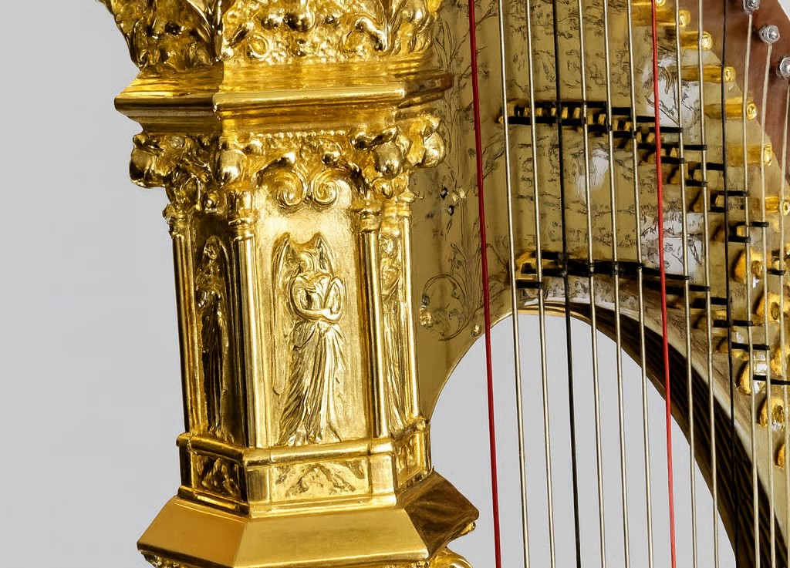

Harps
Harps have enchanted audiences for centuries with their ethereal tones and graceful presence. As one of the oldest musical instruments, the harp's history dates back to ancient civilizations, where it was often associated with royalty and divine music. Today, the harp remains a symbol of elegance and sophistication, captivating both listeners and players with its unique charm.

Types of Harps
Harps come in various sizes and designs, each offering unique features and benefits.
Lever Harps
Also known as folk or Celtic harps, these are smaller and more portable. They use levers to change the pitch of individual strings, making them versatile for various musical genres.
Pedal Harps
Commonly used in orchestras and professional settings, pedal harps have seven pedals that adjust the pitch of all strings in a specific range simultaneously, allowing for quick key changes and complex musical compositions.
Electric Harps
These modern harps are equipped with pickups and amplification systems, making them suitable for contemporary music styles and performances.
Anatomy of a Harp
Understanding the basic components of a harp can enhance your appreciation and knowledge of this exquisite instrument.
Soundboard
The large, flat surface where the strings are attached. It's crucial for sound production, amplifying the vibrations of the strings.
Strings
Harps typically have 47 strings, each corresponding to a specific musical note. The tension and length of the strings determine their pitch.
Neck
The curved top of the harp where the strings are anchored. The neck is connected to the soundboard via the column.
Column
The upright support structure that connects the neck to the soundboard. It provides stability and structural integrity.
Pedals/Levers
Many harps, particularly pedal harps, have mechanisms that allow the player to alter the pitch of the strings, enabling them to play in different keys.
FAQs
How to maintain my harp?
Regular cleaning and tuning are essential for maintenance.
What are the shipping details?
We provide secure worldwide shipping with professional packaging to ensure your harp arrives safely.
What payment options are available?
We accept credit cards and bank transfers for your convenience and security.
Do you offer care guides?
Yes, we provide detailed care guides.
Can I contact you for inquiries?
Absolutely! Use our contact form for any questions or assistance.